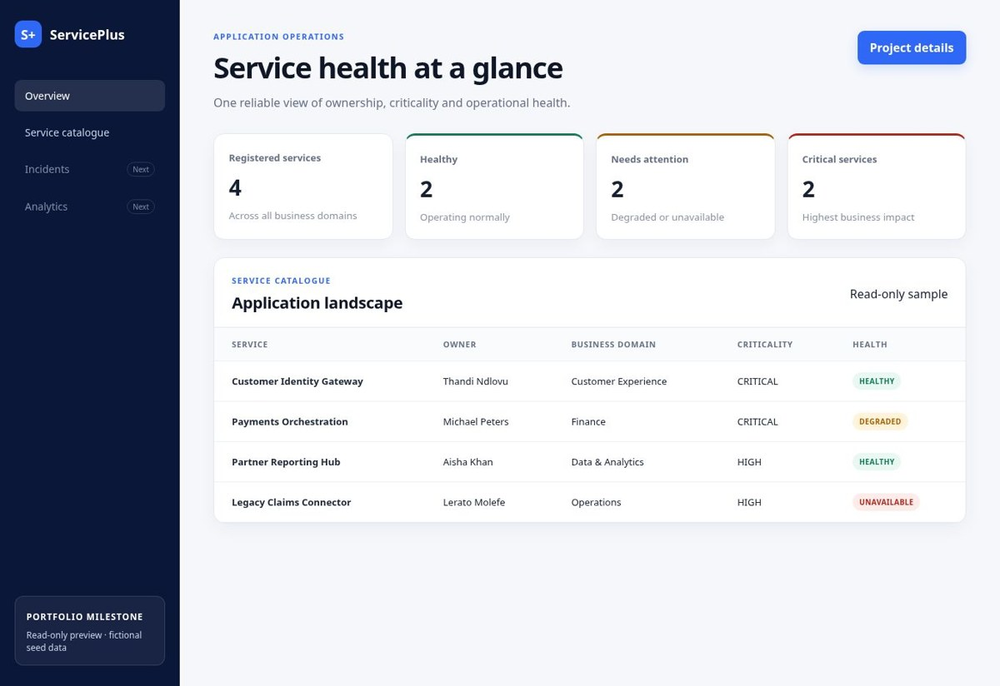

ServicePlus
Application health and service catalogue prototype


Open read-only interface preview
Current milestone
A dashboard showing service counts, searchable service catalogue, health and criticality indicators, and an add-service workflow with validation.
Implementation
Java 17 built-in HTTP server, REST endpoints and in-memory storage, with an HTML, CSS and JavaScript frontend. Includes setup scripts, requirements and architecture documentation.
Planned architecture
React and TypeScript, Spring Boot, PostgreSQL, JWT access control, incident and SLA management, audit history and Python trend analysis are roadmap items. They are not implemented in this published milestone.
Scope
Portfolio prototype with sample services. In-memory changes reset on restart. No client deployment or production outcomes are claimed.
View code and setup instructions